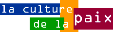
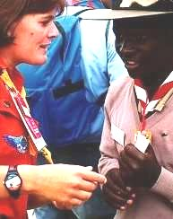
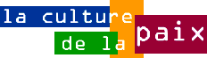
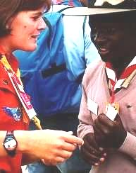

Organisation Mondiale du Mouvement Scout
-
Mots manquants
-
Situations de Paix
-
Le journal de la paix
-
Reporter de la paix
-
Les Chemins de la Paix
- Légendes de Paix
-
Manifeste 2000



 Situations de paix
|
|

 Situations de paix |
Adresse originale : http://www.culture.de.la.paix.itgo.com
email : webmaster@culture.de.la.paix.itgo.com
Développé par l'OMMS en collaboration
avec l'UNESCO